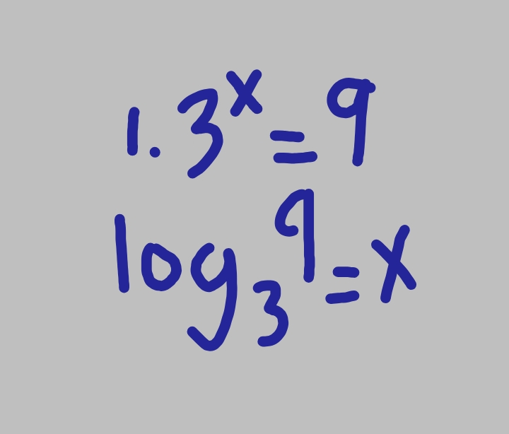
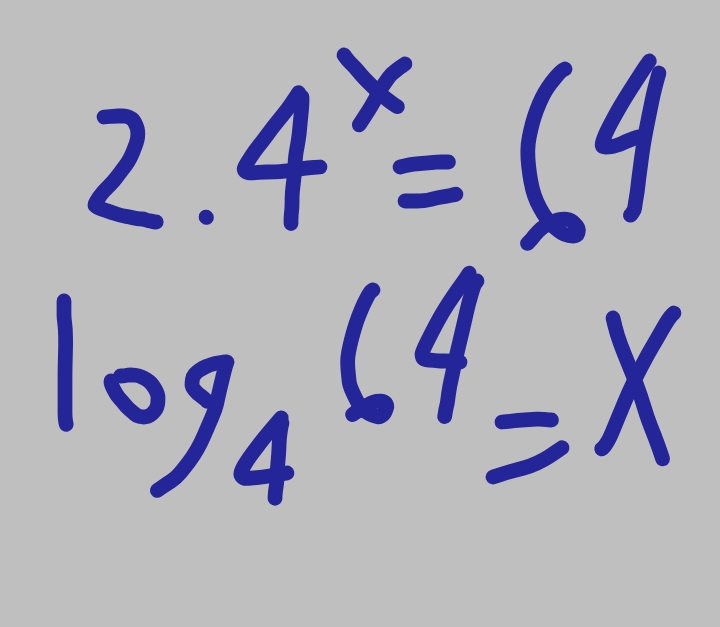
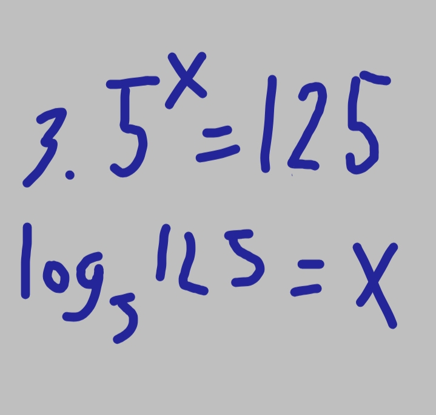
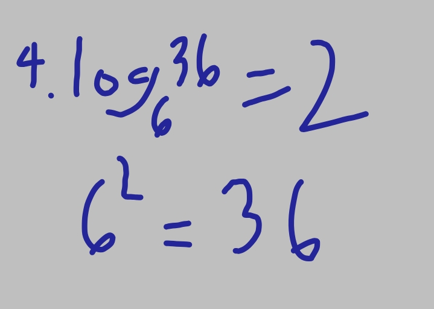
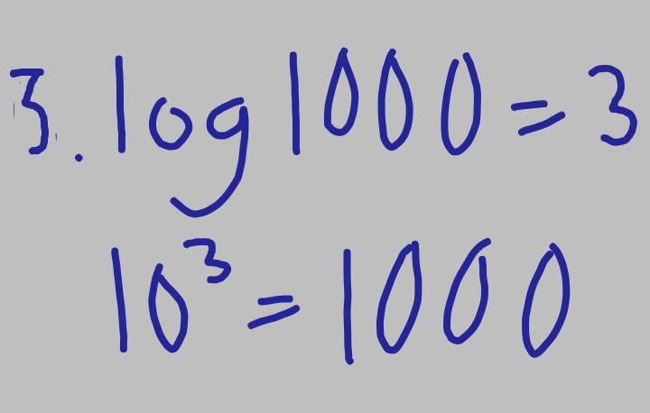

What is Logarithmic
In mathematics, the logarithm to base b is the inverse function of exponentiation with base b. That means that the logarithm of a number x to the base b is the exponent to which b must be raised to produce x.
Example




